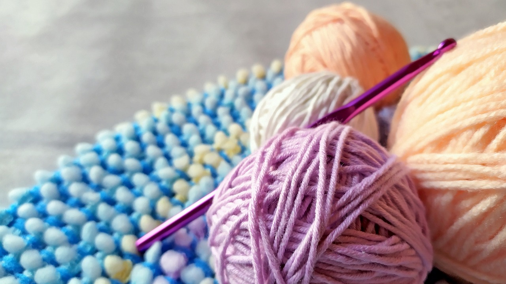

Motorcycle with Son
Motorcycles
Emily has grown a passion for motorcycle and riding over the course of the last year, going from never riding a form of a bike in her life, to being a licensed motorcycle rider. This new hobbie of Emily's is an example of just how much fun Emily tries to have. When riding a motorcycle she equates it to the most honest version of freedom she has ever experienced. The feeling of the wind blowing by as you drive as regular or even high speeds passing other vehicles and actively paying attention to the action of driving unlike how she normally approaches driving. All these points lead to why she loves it so much. It has also been a great opportunity for her to meet and interact with other people and know they have a shared interest in something. Emily being a introvert for a majority of her life has at times found it hard to make those connections with others but with motorcycle riding she has been able to start making that connection.
Crocheting
One of the longest placed hobbies Emily has is her love of crocheting. This love was started as a way to fill down time as she grew up in the intermediary time of phones and computers meaning that she did not always have a device with her to keep her busy. She was able to take this hobbies and begin to take it from just being a way to fill time to creating items that provide a genuine purpose. Things like blankets, stuffed animals, oven mitts, and wash clothes are all items she enjoys making and at times will even make those items for others, paid or just for fun.
Yarn & Hooks
Family Picture
Family
Emily is a mother and wife who works fulltime. Her goal when it comes to family is to ensure she is spending plenty of time with her son and husband while still enjoying her hobbies and other activities. Emily has a lot of passion for cooking as it makes her feel needed and it is a way that she can go out of her way to provide a little bit of happiness with her family.